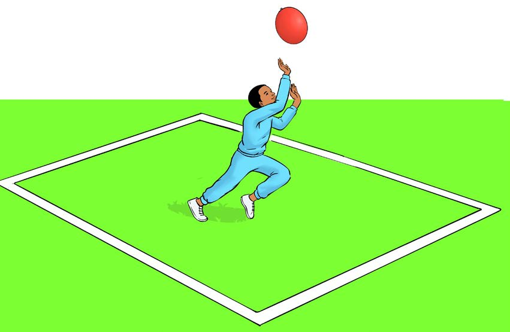
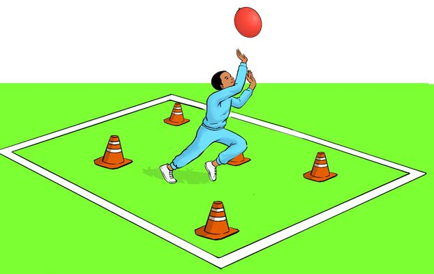

Figure 8: A pupil preventing the balloon from falling
6.
Continue keep the balloon from falling while moving within the boundaries set in the playing area;
7.
After five minutes, add obstacles such as cones inside the playing area;
8.
Continue to keep the balloon in the air while avoiding the obstacles, as shown in Figure 9;

Figure 9: A pupil preventing a balloon from falling while avoiding obstacles